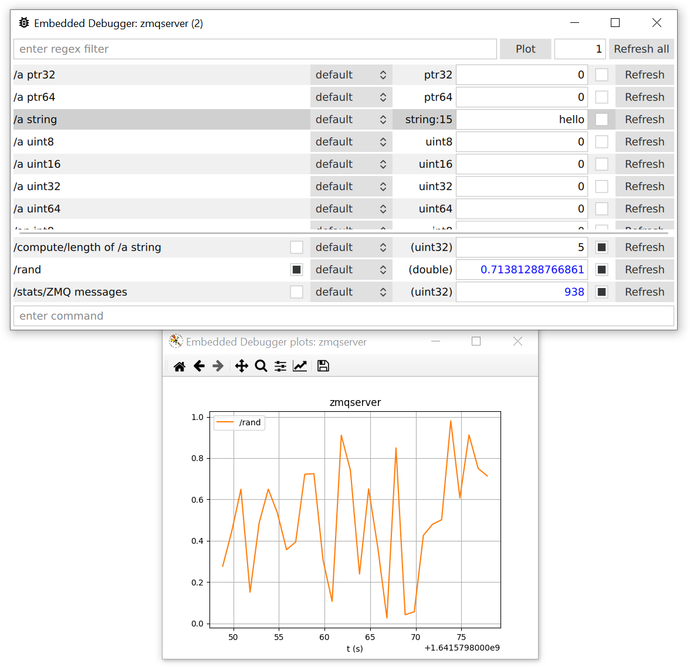

zmqserver¶
Store definition¶
int8 an int8
int16 an int16
int32 an int32
int64 an int64
uint8 a uint8
uint16 a uint16
uint32 a uint32
uint64 a uint64
float a float
double a double
bool a bool
ptr32 a ptr32
ptr64 a ptr64
blob:16 a blob
string:15 a string
{
(int32) an int8 + an int16
(double) circle area (r = /a double)
(uint32) length of /a string
} compute
{
(uint32) ZMQ messages
(uint32) object writes
} stats
(double) rand
(uint64) t (us)
Application¶
/*!
* \file
* \brief A stored::ZmqServer interface for a lot of different types of objects.
*/
#include <stored>
#include "ZmqServerStore.h"
#include <cmath>
#include <time.h>
#if STORED_cplusplus >= 201103L
# include <chrono>
#endif
class ZmqServerStore : public STORE_BASE_CLASS(ZmqServerStoreBase, ZmqServerStore) {
STORE_CLASS_BODY(ZmqServerStoreBase, ZmqServerStore)
public:
ZmqServerStore() : m_messages(), m_writes() {}
protected:
void __compute__an_int8_an_int16(bool set, int32_t& value)
{
if(!set)
value = an_int8.get() + an_int16.get();
}
void __compute__circle_area_r__a_double(bool set, double& value)
{
if(!set)
value = M_PI * a_double.get() * a_double.get();
}
void __compute__length_of__a_string(bool set, uint32_t& value)
{
if(!set)
value = (uint32_t)strlen(static_cast<char*>(a_string.buffer()));
}
void __stats__ZMQ_messages(bool set, uint32_t& value)
{
if(!set)
value = m_messages;
else
m_messages = value;
}
void __stats__object_writes(bool set, uint32_t& value)
{
if(!set)
value = m_writes;
}
void __rand(bool set, double& value)
{
if(!set) {
#ifdef STORED_OS_WINDOWS
value = (double)::rand() / RAND_MAX;
#else
value = drand48();
#endif
}
}
void __t_us(bool set, uint64_t& value)
{
if(!set) {
#if __cplusplus >= 201103L
value = (uint64_t)(std::chrono::duration_cast<std::chrono::microseconds>(
std::chrono::system_clock::now().time_since_epoch()).count());
#else
// There is no portable implementation here...
value = (uint64_t)time(NULL) * 1000000ULL;
#endif
}
}
void __hookSet(stored::Type::type UNUSED_PAR(type), void* UNUSED_PAR(buffer), size_t UNUSED_PAR(len)) { m_writes++; }
public:
void incMessages()
{
m_messages++;
}
private:
uint32_t m_messages;
uint32_t m_writes;
};
int main()
{
ZmqServerStore store;
stored::Debugger debugger("zmqserver");
debugger.map(store);
stored::DebugZmqLayer zmqLayer;
zmqLayer.wrap(debugger);
printf("Connect via ZMQ to debug this application.\n");
stored::Poller poller;
if((errno = poller.add(zmqLayer, nullptr, stored::Poller::PollIn))) {
perror("Cannot add to poller");
exit(1);
}
time_t t = time(NULL);
while(true) {
if(poller.poll(100000).empty()) { // 100 ms
switch(errno) {
case EINTR:
case EAGAIN:
break;
default:
perror("Cannot poll");
exit(1);
} // else timeout
} else if((errno = zmqLayer.recv())) {
perror("Cannot recv");
exit(1);
} else {
store.incMessages();
}
// As an example, call debugger.trace() roughly once per second.
time_t now = time(NULL);
if(t != now) {
t = now;
debugger.trace();
}
}
}
Screenshot¶
Store reference¶
-
template<typename Base_, typename Implementation_>
class stored::ZmqServerStoreObjects¶ All ZmqServerStoreBase’s objects.
Public Members
-
impl::StoreVariantV<Base, Implementation, Type::Blob, 0u, 16u> a_blob¶
a blob
-
impl::StoreVariable<Base, Implementation, bool, 86u, 1> a_bool¶
a bool
-
impl::StoreVariable<Base, Implementation, double, 48u, 8> a_double¶
a double
-
impl::StoreVariable<Base, Implementation, float, 72u, 4> a_float¶
a float
-
impl::StoreVariable<Base, Implementation, void*, 76u, 4> a_ptr32¶
a ptr32
-
impl::StoreVariable<Base, Implementation, void*, 56u, 8> a_ptr64¶
a ptr64
-
impl::StoreVariantV<Base, Implementation, Type::String, 16u, 15u> a_string¶
a string
-
impl::StoreVariable<Base, Implementation, uint16_t, 82u, 2> a_uint16¶
a uint16
-
impl::StoreVariable<Base, Implementation, uint32_t, 68u, 4> a_uint32¶
a uint32
-
impl::StoreVariable<Base, Implementation, uint64_t, 40u, 8> a_uint64¶
a uint64
-
impl::StoreVariable<Base, Implementation, uint8_t, 85u, 1> a_uint8¶
a uint8
-
impl::StoreVariable<Base, Implementation, int16_t, 80u, 2> an_int16¶
an int16
-
impl::StoreVariable<Base, Implementation, int32_t, 64u, 4> an_int32¶
an int32
-
impl::StoreVariable<Base, Implementation, int64_t, 32u, 8> an_int64¶
an int64
-
impl::StoreVariable<Base, Implementation, int8_t, 84u, 1> an_int8¶
an int8
-
impl::StoreFunction<Base, Implementation, ZmqServerStoreFunctionMap, 1u> compute__an_int8_an_int16¶
compute/an int8 + an int16
-
impl::StoreFunction<Base, Implementation, ZmqServerStoreFunctionMap, 2u> compute__circle_area_r__a_double¶
compute/circle area (r = /a double)
-
impl::StoreFunction<Base, Implementation, ZmqServerStoreFunctionMap, 3u> compute__length_of__a_string¶
compute/length of /a string
-
impl::StoreFunction<Base, Implementation, ZmqServerStoreFunctionMap, 6u> rand¶
rand
-
impl::StoreFunction<Base, Implementation, ZmqServerStoreFunctionMap, 5u> stats__object_writes¶
stats/object writes
-
impl::StoreFunction<Base, Implementation, ZmqServerStoreFunctionMap, 4u> stats__ZMQ_messages¶
stats/ZMQ messages
-
impl::StoreFunction<Base, Implementation, ZmqServerStoreFunctionMap, 7u> t_us¶
t (us)
-
impl::StoreVariantV<Base, Implementation, Type::Blob, 0u, 16u> a_blob¶
-
template<typename Implementation_>
class stored::ZmqServerStoreBase : public stored::ZmqServerStoreObjects<ZmqServerStoreBase<Implementation_>, Implementation_>¶ Base class with default interface of all ZmqServerStore implementations.
Although there are no virtual functions in the base class, subclasses can override them. The (lowest) subclass must pass the
Implementation_template paramater to its base, such that all calls from the base class can be directed to the proper overridden implementation.The base class cannot be instantiated. If a default implementation is required, which does not have side effects to functions, instantiate stored::ZmqServerStore. This class contains all data of all variables, so it can be large. So, be aware when instantiating it on the stack. Heap is fine. Static allocations is fine too, as the constructor and destructor are trivial.
To inherit the base class, you can use the following template:
class ZmqServerStore : public STORE_BASE_CLASS(ZmqServerStoreBase, ZmqServerStore) { STORE_CLASS_BODY(ZmqServerStoreBase, ZmqServerStore) public: // Your class implementation, such as: ZmqServerStore() is_default // ... };- See
- See
stored::ZmqServerStoreData
Public Types
-
enum [anonymous]¶
Values:
-
enumerator ObjectCount¶
Number of objects in the store.
-
enumerator VariableCount¶
Number of variables in the store.
-
enumerator FunctionCount¶
Number of functions in the store.
-
enumerator BufferSize¶
Buffer size.
-
enumerator ObjectCount¶
-
typedef Implementation_ Implementation¶
Type of the actual implementation, which is the (lowest) subclass.
-
typedef uintptr_t Key¶
Type of a key.
-
typedef Map<String::type, Variant<Implementation>>::type ObjectMap¶
Map as generated by map().
-
typedef ZmqServerStoreObjects<ZmqServerStoreBase, Implementation_> Objects¶
Public Functions
-
ZmqServerStoreBase(ZmqServerStoreBase&&) = delete¶
Deleted move constructor.
-
ZmqServerStoreBase(ZmqServerStoreBase const&) = delete¶
Deleted copy constructor.
-
inline void __compute__an_int8_an_int16(bool set, int32_t &value)¶
Callback for compute/an int8 + an int16.
-
inline void __compute__circle_area_r__a_double(bool set, double &value)¶
Callback for compute/circle area (r = /a double)
-
inline void __compute__length_of__a_string(bool set, uint32_t &value)¶
Callback for compute/length of /a string.
-
inline void __rand(bool set, double &value)¶
Callback for rand.
-
inline void __stats__object_writes(bool set, uint32_t &value)¶
Callback for stats/object writes.
-
inline void __stats__ZMQ_messages(bool set, uint32_t &value)¶
Callback for stats/ZMQ messages.
-
inline void __t_us(bool set, uint64_t &value)¶
Callback for t (us)
-
inline Key bufferToKey(void const *buffer) const noexcept¶
Converts a variable’s buffer to a key.
A key is unique for all variables of the same store, but identical for the same variables across different instances of the same store class. Therefore, the key can be used to synchronize between instances of the same store. A key does not contain meta data, such as type or length. It is up to the synchronization library to make sure that these properties are handled well.
For synchronization, when hookEntryX() or hookEntryRO() is invoked, one can compute the key of the object that is accessed. The key can be used, for example, in a key-to-Variant map. When data arrives from another party, the key can be used to find the proper Variant in the map.
This way, data exchange is type-safe, as the Variant can check if the data format matches the expected type. However, one cannot process data if the key is not set yet in the map.
-
inline Variant<Implementation> find(char const *name, size_t len = std::numeric_limits<size_t>::max()) noexcept¶
Finds an object with the given name.
- Returns
the object, or an invalid stored::Variant if not found.
-
template<typename T>
inline Function<T, Implementation> function(char const *name, size_t len = std::numeric_limits<size_t>::max()) noexcept¶ Finds a function with the given name.
The function, when it exists, must have the given (fixed) type.
-
inline constexpr Implementation const &implementation() const noexcept¶
Returns the reference to the implementation.
-
inline constexpr Implementation &implementation() noexcept¶
Returns the reference to the implementation.
-
template<typename F>
inline void list(F &&f) noexcept¶ Calls a callback for every object in the longDirectory().
-
template<typename F>
inline void list(F f, void *arg, char const *prefix = nullptr) noexcept¶ Calls a callback for every object in the longDirectory().
-
inline uint8_t const *longDirectory() const noexcept¶
Retuns the long directory.
When not available, the short directory is returned.
-
inline ObjectMap map(char const *prefix = nullptr)¶
Create a name to Variant map for the store.
Generating the map may be expensive and the result is not cached.
-
inline constexpr char const *name() const noexcept¶
Returns the name of store, which can be used as prefix for stored::Debugger.
-
void operator=(ZmqServerStoreBase&&) = delete¶
Deleted move assignment operator.
-
void operator=(ZmqServerStoreBase const&) = delete¶
Deleted assignment operator.
-
inline uint8_t const *shortDirectory() const noexcept¶
Returns the short directory.
-
template<typename T>
inline Variable<T, Implementation> variable(char const *name, size_t len = std::numeric_limits<size_t>::max()) noexcept¶ Finds a variable with the given name.
The variable, when it exists, must have the given (fixed) type.
Public Static Functions
-
template<typename T>
static inline constexpr FreeFunction<T, Implementation> freeFunction(char const *name, size_t len = std::numeric_limits<size_t>::max()) noexcept¶ Finds a function with the given name.
The function, when it exists, must have the given (fixed) type. It is returned as a free function; it is not bound yet to a specific store instance. This function is constexpr for C++14.
-
template<typename T>
static inline constexpr FreeVariable<T, Implementation> freeVariable(char const *name, size_t len = std::numeric_limits<size_t>::max()) noexcept¶ Finds a variable with the given name.
The variable, when it exists, must have the given (fixed) type. It is returned as a free variable; it is not bound yet to a specific store instance. This function is constexpr for C++14.
-
static inline constexpr char const *hash() noexcept¶
Returns a unique hash of the store.
Friends
- friend class impl::StoreFunction
- friend class impl::StoreVariable
- friend class impl::StoreVariantF
- friend class impl::StoreVariantV
- friend class stored::FreeVariable
- friend class stored::Variant< void >
-
class stored::ZmqServerStore : public stored::ZmqServerStoreBase<ZmqServerStore>¶
Default ZmqServerStoreBase implementation.
Public Types
-
typedef ::stored::ZmqServerStoreBase<ZmqServerStore> base¶
Public Functions
-
ZmqServerStore() = default¶
Default constructor.
-
ZmqServerStore(ZmqServerStore&&) = delete¶
Deleted move constructor.
-
ZmqServerStore(ZmqServerStore const&) = delete¶
Deleted copy constructor.
-
void operator=(ZmqServerStore&&) = delete¶
Deleted move assignment operator.
-
void operator=(ZmqServerStore const&) = delete¶
Deleted assignment operator.
Friends
- friend class ::stored::ZmqServerStoreBase< ZmqServerStore >
-
typedef ::stored::ZmqServerStoreBase<ZmqServerStore> base¶